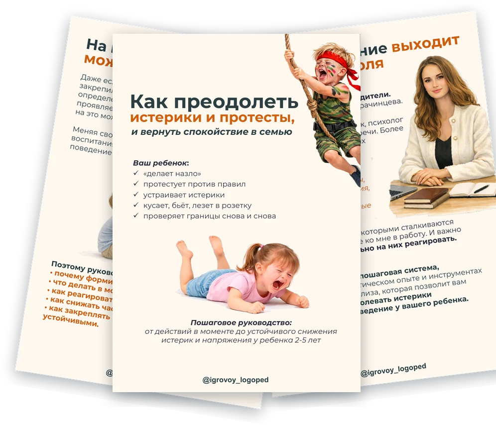

Курс и руководства от поведенческого аналитика
Системы, по которым Александра работает с семьями, в формате для самостоятельной работы. Основа: прикладной анализ поведения (ABA) и практика с 2018 года.

Видеокурс «Дефекация сидя»
Пошаговая система: как перевести ребёнка от дефекации стоя или в подгузник к спокойной дефекации сидя на горшке или унитазе. По ней прошли более 100 семей.
- 5 видеолекций, дневник наблюдения, структура тренинга, система поощрений
- Как перенести дефекацию в туалетную зону и поэтапно изменить позу
- Как убрать подгузник без стресса и закрепить навык без откатов
- Разбор кейсов с результатами клиентов
Путь, по которому идёт семья
Структура курса: от наблюдения к закреплению. Маршрут подстраивается под ребёнка, нет одного сценария для всех.
- Подготовка и сбор данныхПервая лекция и дневник наблюдений: когда, где, в какой позе и что происходит до и после.
- Разбор и маршрутПо дневнику выбираем стратегию: с чего начать, какие стимулы и какая туалетная зона.
- Тренинг по маршрутуМаленькие шаги: сначала сидя на горшке или унитазе, затем перенос дефекации в туалетную зону.
- Закрепление навыкаКогда ребёнок готов, снимаем подгузник, стабилизируем результат, готовимся к откатам.
Если нужна конкретная помощь по одной теме

Туалетный навык без давления
Работа с устойчивыми привычками, когда процесс начался, но застрял: подгузник, поза стоя, страхи, ритуалы. 53 страницы практики.

Как преодолеть истерики и протесты
Пошаговый алгоритм на принципах ABA: что делать во время истерики, при агрессии, как снижать частоту вспышек.
Что взять под вашу ситуацию
Нужна помощь специалиста?
Если вы чувствуете, что самостоятельно справиться будет сложно, или хотите, чтобы рядом был специалист и подсказывал на каждом шаге, выберите индивидуальное сопровождение: Александра составит план под вашего ребёнка и будет вести семью до результата.
Что пишут родители
Туалетный тренинг онлайн: от запроса до результата
Видео из историй. Публикуется с согласия родителей, лицо ребёнка скрыто. Работа шла онлайн через маму.
Решила вам написать. У нас такая ситуация необычная. Сын какал только лёжа, и мы надевали памперс. Запоры у него были с двух, и мы принимаем Форлакс. И две недели мы делали всё по вашей книге, и вчера перед сном он впервые покакал на горшок!!! Ну мы с мужем прибываем в шоке)))
Сын последнее время стал сам ночью просыпаться и писать в горшок, мы даже не замечаем этого. И какает тоже почти всегда в горшок уже неделю: исключение было 2 раза на улице в памперс, а так спокойно на даче и дома всё удаётся!!!
Тексты из личных сообщений родителей, опубликованы с согласия.
Частые вопросы о материалах
Как получить материалы после покупки?
Откройте нужный продукт, нажмите кнопку покупки, укажите email и оплатите на сайте через ЮKassa. Ссылки на материалы придут на почту.
Можно ли купить из другой страны?
Да, материалы цифровые. Если оплатить на сайте не получается, напишите нам: способ оплаты и валюту для семей за границей обсудим в личных сообщениях.
Чем материалы отличаются от консультации?
Курс и руководства рассчитаны на самостоятельную работу родителей по готовой системе. Консультация и сопровождение нужны, когда требуется разбор именно вашей ситуации и обратная связь специалиста.
С чего лучше начать, если ребёнок какает только в подгузник?
С видеокурса «Дефекация сидя». Руководство по туалетному навыку подойдёт, если вы уже начали, но процесс застрял.
* Курс и руководства разработаны для детей с типичным развитием. Если у ребёнка расстройство аутистического спектра или другие особенности развития, лучше выбрать индивидуальное сопровождение: к плану добавляются визуальные расписания и альтернативные способы коммуникации. Напишите, и Александра подберёт формат.